1. Bevor du anfängst
Du brauchst einmal einen Computer mit MetaTrader 5, um deine Reports zu speichern. Danach kannst du die Trading-Bilanz auch am Handy nutzen.
So gehst du vor:
- Verbinde MetaTrader 5 mit deinen Konten (einmalig, am Computer).
- Speichere die Reports aus MetaTrader 5 und lade sie ins Tool.
- Wähle den Trading Benefit (z. B. ×24).
- Lade die Wechselkurse (für Euro und Steuer).
- Wallet: Füge die Tag-Daten ein und trage ein, woher die Coins kamen (von Hand oder mit der Börsen-Datei). Empfohlen für „Dein echtes Geld“ und die Krypto-Steuer. Wallet-Dateien sind ein zusätzlicher Weg für Fortgeschrittene.
Beim ersten Öffnen begrüßt dich das Tool mit einem wichtigen Hinweis. Beantworte dort die Frage „In welchem Land zahlst du Steuern?“ und klicke auf „Gelesen und verstanden“.
Gut zu wissen: Deine Daten liegen nur in dem Browser, in dem du das Tool nutzt. Die Online-Version und eine heruntergeladene Datei speichern getrennt. Mit einer Sicherung nimmst du deine Daten mit.
Reiter „Reports“
Hier lädst du die Reports aus MetaTrader 5, wählst den Trading Benefit und gibst auf Wunsch deinen Trading-Konten individuelle Namen.
2. MetaTrader 5 verbinden
Das machst du nur einmal.
- Installiere MetaTrader 5 am Computer.
- Hole Kontonummer und Investor-Passwort: Öffne im Tag-Portal CopyX → Follower Hub → Strategies und klicke dort beim Konto auf das Auge-Symbol unter „Credentials“.

Zum Vergrößern anklicken. Grau verdeckt: Kontonummern und Beträge. - Wähle in MetaTrader 5 Datei → Handelskonto eröffnen (engl. File → Open an Account) und suche „T.M. Financials Ltd“.

Klicke den Broker an und dann auf „Weiter“. - Wähle mit dem aktuellen Handelskonto verbinden (engl. Connect with an existing trade account) und gib Kontonummer (engl. Login) und Investor-Passwort (engl. Password) ein. Der Server steht schon da.
Mit dem Investor-Passwort kannst du nur schauen, nicht handeln.

Die Kontonummer im Bild ist erfunden. Zum Schluss klickst du auf „Fertig stellen“. - Wiederhole das für jedes weitere Konto. Danach stehen alle Konten links im Navigator (Ansicht → Navigator, engl. View → Navigator, Strg+N). Ein Doppelklick wechselt das Konto.

Grau verdeckt: Kontonummern und Namen.
Am Mac sind die Menüs gleich, nur ohne Tastenkürzel.
3. Report speichern
- Öffne MetaTrader 5 am Computer und wähle das Konto (Doppelklick im Navigator).
- Wähle Ansicht → Terminal (engl. View → Toolbox) oder drücke Strg+T.
- Klicke im Fenster Terminal (engl. Toolbox) auf den Reiter Kontohistorie (engl. History).
- Klicke mit der rechten Maustaste in die Liste und wähle Ganze Historie (engl. All History). Später reicht ein kürzerer Zeitraum, solange keine Lücke entsteht. Das Tool merkt eine Lücke.
- Klicke noch einmal mit der rechten Maustaste in die Liste, wähle Bericht (engl. Report) → HTML (Internet Explorer) und speichere die Datei.

Grau verdeckt: Kontonummern und Namen. - Wiederhole das für jedes Konto. Die Dateien heißen meist ReportHistory-Kontonummer.html. Den Ordner wählst du beim Speichern selbst.
Am Mac klickst du mit zwei Fingern (oder mit ctrl-Klick) statt mit der rechten Maustaste.
Am Computer kannst du Dateien auch an jeder anderen Stelle ins Tool ziehen. Das Tool erkennt, was es ist, und legt sie an den richtigen Ort.
4. Reports laden
Öffne die Trading-Bilanz. Der Reiter „Reports“ ist schon gewählt. Ziehe die gespeicherten Dateien in das Feld „Report-Dateien hierher ziehen“ oder klicke darauf und wähle sie aus. Du kannst alle Dateien auf einmal wählen.

Gemeint ist die HTML-Datei aus MetaTrader 5 (sie endet auf .html), nicht ein Report als PDF oder Excel.
5. Trading Benefit wählen
Nach dem Laden stehen deine Konten in der Karte „Deine Konten“. Wähle bei jedem Konto den Trading Benefit, meist ×12 oder ×24. Hast du einen anderen, wähle „andere Zahl …“ und gib ihn ein. Mit „für alle ▾“ im Spaltenkopf setzt du ihn für mehrere Konten auf einmal. Solange er fehlt, steht dort „fehlt“. In der Spalte „Name“ kannst du jedem Konto einen Namen geben, um es in der Auswertung leicht zu erkennen.

Der Trading Benefit heißt bei Tag auch „Amplifier“. Tag vervielfacht damit dein eingezahltes Geld im MT5: Bei ×24 stehen 100 USD als 2.400 USD da. Gewinne, Performance Fee und Gewinnauszahlungen vervielfacht Tag nicht.
So findest du ihn: Öffne im Tag-Portal CopyX → Follower Hub → Strategies und teile „Balance“ durch „Invested“. Die Spalte „Multiplier“ ist etwas anderes.

Hast du keinen Trading Benefit, wähle ×1. Für die Steuer spielt er keine Rolle, nur für Investition und Rendite.
Reiter „Kurse“
Hier holst du die Wechselkurse für Euro und Steuer.
6. Wechselkurse laden
Für Beträge in Euro und für die Steuer braucht das Tool den Wechselkurs jedes Tages, an dem du eine Buchung hast. Es nimmt den Referenzkurs der Europäischen Zentralbank (EZB). In USD funktioniert die Auswertung auch ohne.
Die meisten Tage sind schon im Tool eingebaut. Fehlen die neuesten, öffne den Reiter „Kurse“ und klicke auf „Kurse laden“.
Mit dem Häkchen „Fehlende Kurse automatisch laden“ holt das Tool fehlende Kurse von selbst, sobald du es öffnest, neue Reports lädst oder Tag-Daten einfügst. Ohne Häkchen fragt es nur, wenn du auf „Kurse laden“ klickst. Soll das Tool gar nicht ins Internet gehen, lade die Datei selbst von der Seite der EZB ↗ herunter und ziehe sie im Reiter „Kurse“ unter „Ohne Internet“ hinein. Bei jedem Abruf, auch beim Herunterladen der Datei, sieht die EZB deine IP-Adresse.
Reiter „Wallet“
Im Reiter „Wallet“ hältst du fest, wie dein Geld zu Tag und zurück geflossen ist. Daraus rechnet das Tool „Dein echtes Geld“ und, wenn du mit USDC oder USDT ein- oder ausgezahlt hast, die Krypto-Steuer.
Der Weg hat drei Teile: Du fügst die Tag-Daten ein, trägst ein, woher die Coins kamen (mit der Börsen-Datei oder von Hand), und arbeitest danach „Noch offen“ ab.
7. Tag-Daten einfügen
Öffne den Reiter „Wallet“. Beim ersten Mal kommt das Fenster „Was du hier machst“. Klicke dort auf „Mit den Tag-Daten anfangen“. Dann öffnet sich das Fenster „Daten“ mit dem Feld „Hier einfügen“. Später findest du es im Reiter „Wallet“ oben unter „＋ Daten“.

Öffne das Tag-Portal in einem zweiten Browser-Tab und gehe so vor:
- Klicke im Tag-Portal links auf Tag Wallet.
- Einzahlungen: Öffne „Transaction History“ und wähle bei „From“ ein Datum vor deiner ersten Einzahlung.
- Klicke auf „More Filters“, wähle bei „Method“ „PSP“ und klicke auf „Submit“. Wähle bei „Show“ die größte Zahl.

Grau verdeckt: Guthaben, Summen, Nummern, Datum und Beträge. - Kopiere die ganze Seite und füge sie ins Feld „Hier einfügen“ ein. Klicke dann auf „Übernehmen“.
Oben auf der Seite stehen deine Summen bei Tag (Deposits, Withdrawals), unten die Anzahl der Einträge. Damit prüft das Tool, ob alles angekommen ist.
Klicke auf die Seite und drücke Strg+A, dann Strg+C. Klicke ins Feld „Hier einfügen“ und drücke Strg+V.Das Tool zeigt dann eine Vorschau:

Beispiel mit erfundenen Daten. Im Beispiel fehlen die Auszahlungen noch, darum steht dort „Füge noch die Seite ‚Withdrawals‘ ein.“ Bei „Woher und wohin?“ kannst du auch später antworten. Klicke auf „Speichern“.
- Auszahlungen: Öffne „Withdrawals“ und klicke auf „Display Processed Withdrawals“ (danach steht dort „Hide Processed Withdrawals“). Wähle bei „Show“ die größte Zahl, kopiere die ganze Seite und füge sie ins Feld „Hier einfügen“ ein. Klicke dann auf „Übernehmen“.

Grau verdeckt: Guthaben, Summen, Nummern, Datum und Beträge. - Du kannst jederzeit wieder alles einfügen. Was schon da ist, erkennt das Tool.
Am Mac nimmst du ⌘ Cmd statt Strg. PSP ist ein Filter bei Tag: Er zeigt nur Einzahlungen von außen, nicht die Überträge zwischen der Tag Wallet und deinen Trading-Konten.
Gut zu wissen: Zahlst du bei Tag USDC ein, tauscht Tag sie sofort in USD. Steuerlich ist das ein Verkauf. Bei einer Auszahlung in USDC ist es umgekehrt ein Kauf. Das Tool rechnet mit USDC und USDT.
Danach steht oben im Reiter „Wallet“ bei „Noch offen“ eine rote Zahl. Was sie heißt, steht im nächsten Abschnitt.
8. Was „Noch offen“ dir sagt
Nach dem Einfügen der Tag-Daten steht oben im Reiter „Wallet“ bei „Noch offen“ eine rote Zahl. Ein Klick darauf öffnet das Fenster „Noch offen“. Es zeigt einen Punkt nach dem anderen, den ältesten zuerst. Unter „Alle Punkte“ siehst du die ganze Liste.

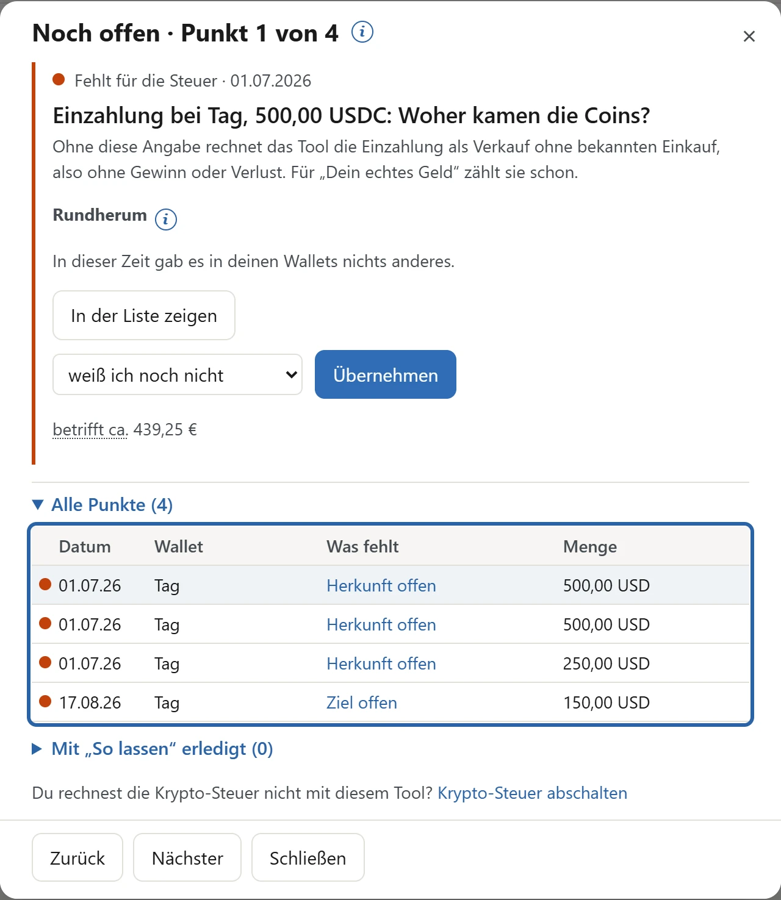
Warum die roten Punkte kommen: Tag zeigt nur, dass Geld angekommen oder weggegangen ist. Hast du mit USDC oder USDT eingezahlt, zählt für die Steuer aber, wann und zu welchem Preis du diese Coins gekauft hast. Deshalb fragt das Tool bei jeder Einzahlung „Woher kamen die Coins?“ und bei jeder Auszahlung „Wohin gingen die Coins?“. Für „Dein echtes Geld“ zählen die Ein- und Auszahlungen schon jetzt. Die Punkte betreffen nur die Krypto-Steuer.
Die Farbe sagt, wie wichtig ein Punkt ist:
- Rot: Das fehlt für die Steuer. Grau darunter steht, um wie viel Euro es ungefähr geht („betrifft ca.“).
- Gelb: Bitte prüfen. Meist ist das ein Vorschlag des Tools, den du übernimmst oder ablehnst. Zählt er für die Steuer, steht auch hier „betrifft ca.“.
- Grau: Gut zu wissen. An der Steuer ändert das nichts.
Du musst nicht sofort antworten. Lass die Punkte liegen und trage zuerst ein, woher die Coins kamen: mit der Börsen-Datei oder von Hand. Danach findet das Tool oft selbst den passenden Vorschlag, und der Punkt wird gelb.
Die Zahl kann zuerst steigen. Liest du eine Börsen-Datei ein, kommen manchmal neue Punkte dazu, zum Beispiel für Auszahlungen, bei denen das Tool die Wallet noch nicht kennt, oder für Coins, die du in die Börse eingezahlt hast. Das ist normal. Die Meldung nach dem Einlesen sagt, welche Punkte neu sind und warum.
9. Börsen-Datei laden
Hast du deine Coins bei einer Börse gekauft, übernimmt das Tool Käufe, Verkäufe und Auszahlungen aus einer Datei der Börse. Bisher liest das Tool nur Dateien von Bitvavo. Hast du bei einer anderen Börse gekauft, zum Beispiel bei Kraken, trage den Kauf von Hand ein.
Die Datei bekommst du bei Bitvavo nur im Browser am Computer, nicht in der App.
So bekommst du die Datei bei Bitvavo
Die Bilder zeigen Bitvavo auf Englisch, die englischen Namen stehen in Klammern. Ob Bitvavo bei dir deutsch oder englisch eingestellt ist, spielt keine Rolle: Die Datei ist in beiden Sprachen gleich.
- Öffne bitvavo.com im Browser am Computer und melde dich an. In der App von Bitvavo gibt es die Datei nicht.
- Fahre mit der Maus über deinen Namen oben rechts. Im Menü, das sich dann öffnet, klicke auf Transaktionsverlauf (engl. Transaction history).
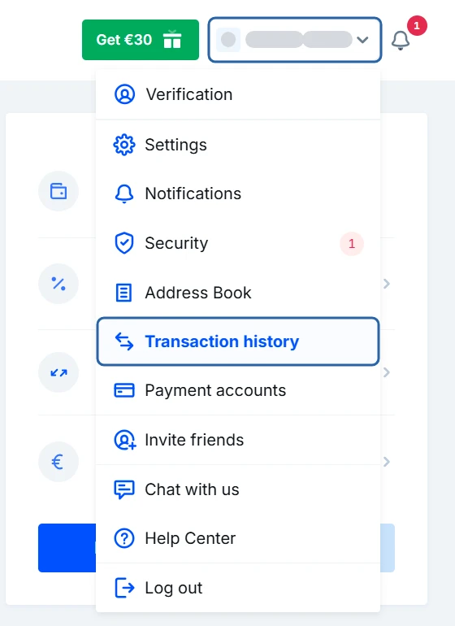
Grau verdeckt: Name. - Klicke auf der Seite Transaktionsverlauf (engl. Transaction History) rechts oben auf Exportieren (engl. Export).
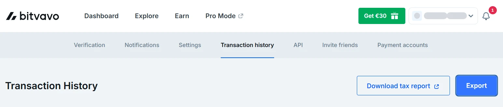
Grau verdeckt: Name. - Wähle im Fenster Vollständige Transaktionshistorie (CSV) (engl. Full history (CSV)) und klicke auf Exportieren (engl. Export). Die Datei heißt „Vollständige Transaktionshistorie.csv“ (engl. „Full history.csv“) und landet in deinem Ordner für Downloads.
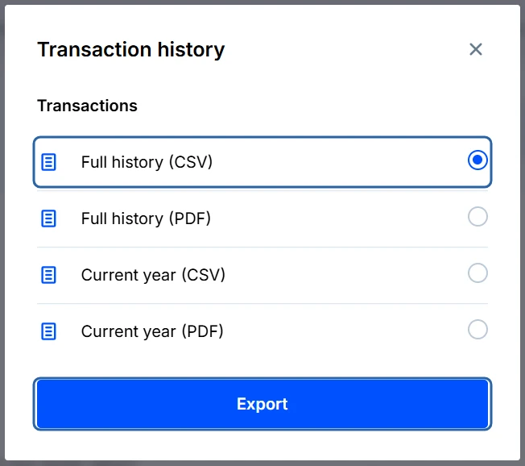


Aktuelles Jahr (CSV) (engl. Current year (CSV)) geht auch. Mit der vollständigen Datei hat das Tool aber alle Käufe, auch die aus früheren Jahren.
Öffne dann im Reiter „Wallet“ oben „＋ Daten“ und wähle „Börsen“. Ziehe die Datei in das Feld „Börsen-Datei (.csv) hierher ziehen“ oder klicke darauf und wähle sie aus. Das Tool zeigt eine Vorschau:

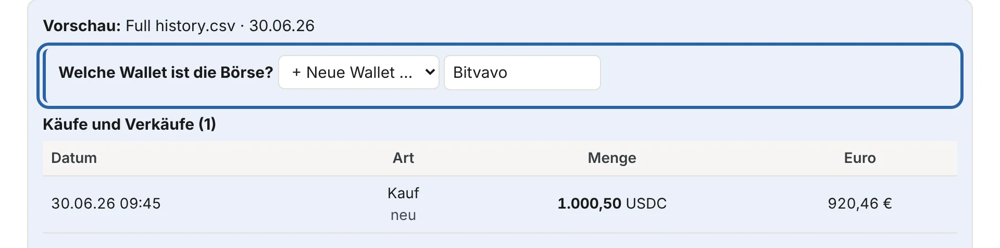
- Welche Wallet ist die Börse? Für eine neue Wallet schlägt das Tool den Namen „Bitvavo“ vor.
- Käufe und Verkäufe sowie Überträge und Einzahlungen zeigen, was das Tool übernimmt. „neu“ heißt: Das ist noch nicht im Tool.
- Welche Wallet ist das? Wähle die Wallet, an die du die Coins geschickt hast. Ohne Wahl wird jede dieser Auszahlungen ein roter Punkt in „Noch offen“, den du später beantworten kannst.
Klicke auf „Übernehmen“. Die Meldung darunter sagt, was das Tool übernommen hat und welche Punkte in „Noch offen“ neu sind. Du kannst die Datei später wieder einlesen, zum Beispiel jeden Monat. Was schon da ist, erkennt das Tool.
Ein- und Auszahlungen in Euro übernimmt das Tool nicht, ebenso andere Coins als USDC und USDT.
10. Von Hand eintragen
Was keine Datei hat, trägst du von Hand ein, zum Beispiel einen Kauf bei einer anderen Börse oder einen Übertrag in deine Wallet. Öffne im Reiter „Wallet“ oben „＋ Daten“ und wähle „Von Hand“. Die Liste dort hat eine Reihenfolge. Gehe sie von oben nach unten durch und lass die Punkte in „Noch offen“ so lange liegen.

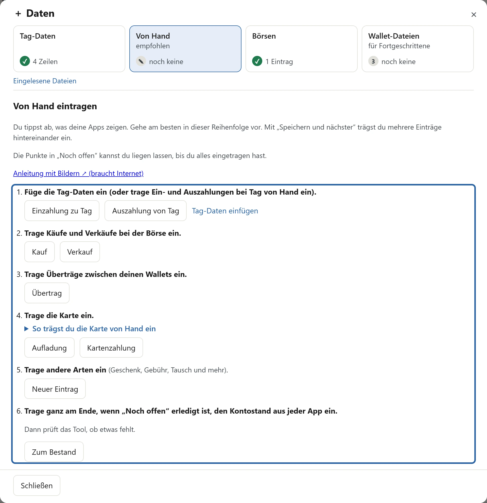
- Tag: Hast du die Tag-Daten eingefügt, ist hier nichts mehr zu tun.
- Käufe und Verkäufe bei einer Börse, die keine Datei hat.
- Überträge zwischen deinen Wallets, auch von der Börse in deine Wallet.
- Die Karte, wenn du eine Krypto-Karte hast.
- Andere Arten wie Geschenk, Gebühr oder Tausch.
- Der Kontostand aus jeder App, aber erst ganz am Ende, wenn „Noch offen“ erledigt ist.
Beispiel: Kauf bei Kraken
Du hast am 30.06. bei Kraken 252 USDC für 232,40 € gekauft. Klicke im zweiten Schritt auf „Kauf“. Trage Datum und Uhrzeit aus deiner Kaufbestätigung ein. Bei „Wallet / Börse“ wählst du „+ Neue Wallet …“, tippst „Kraken“ und klickst auf „OK“. Wähle den Coin und trage die Menge ein, bei „Wert“ den bezahlten Betrag in Euro mit der Gebühr. Klicke auf „Speichern“, oder auf „Speichern und nächster“, wenn noch ein Eintrag kommt.

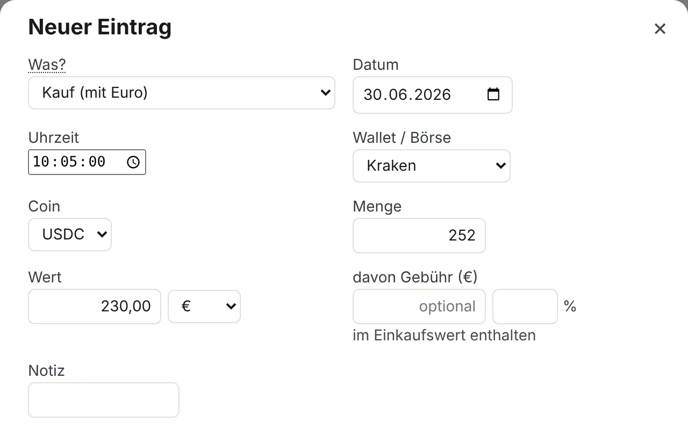
Beispiel: Übertrag von Kraken in deine Wallet
Danach hast du die 252 USDC von Kraken in deine Wallet geschickt, angekommen sind 250 USDC. Klicke im dritten Schritt auf „Übertrag“. Wähle bei „von Wallet“ Kraken und bei „nach Wallet“ deine Wallet. Bei „Menge“ trägst du ein, was abgebucht wurde, bei „Menge angekommen“, was in deiner Wallet ankam. Den Unterschied rechnet das Tool als Gebühr.

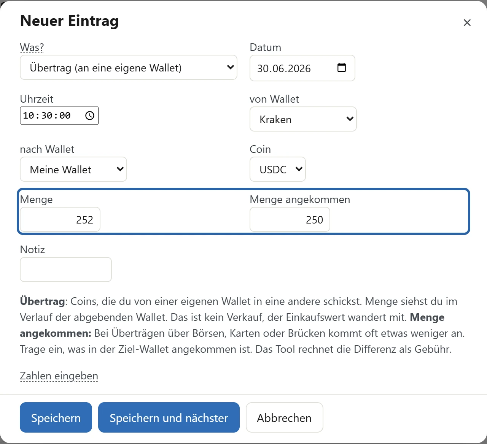
Im Beispiel heißt deine Wallet „Meine Wallet“. Diesen Namen legt das Tool am Anfang selbst an. Du kannst ihn ändern: Klicke im Reiter „Wallet“ oben auf „Wallets“ und gib ihr zum Beispiel den Namen deiner Wallet-App.
Den Kontostand trägst du ganz am Ende ein, wenn „Noch offen“ erledigt ist (nächster Abschnitt). Vorher passt er oft noch nicht zu deinen Einträgen.
11. „Noch offen“ abarbeiten
Wenn du alles eingetragen hast, öffne „Noch offen“ oben im Reiter „Wallet“. Jetzt sind viele Punkte gelb: Das Tool hat zu ihnen einen Vorschlag gefunden.

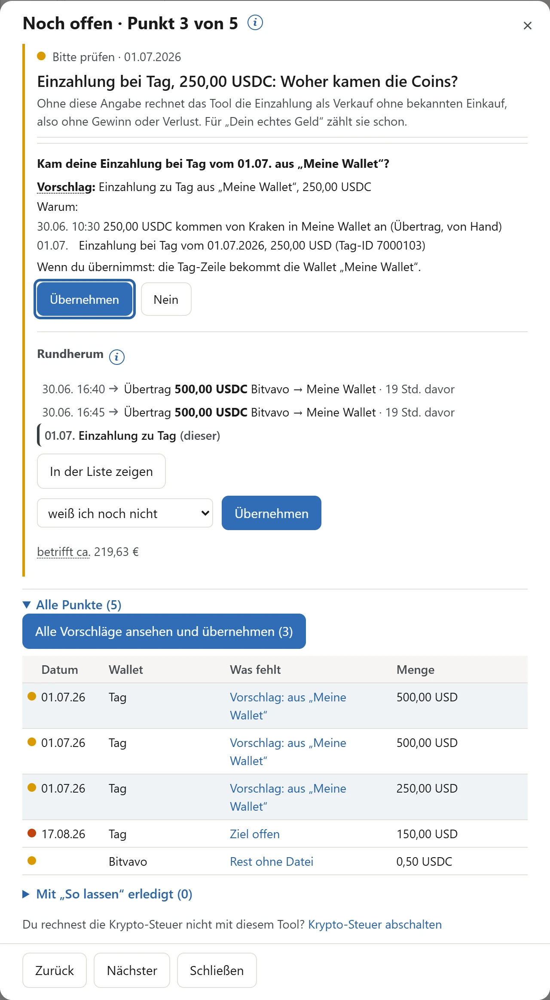
So ist eine Karte aufgebaut:
- Oben klein die Farbe und das Datum, darunter groß die Frage und grau, was das Tool ohne deine Antwort macht.
- Gibt es einen Vorschlag, steht er fett als Frage da. Darunter folgen „Vorschlag:“, bei „Warum:“ die Bewegungen mit Datum und Uhrzeit und bei „Wenn du übernimmst:“, was sich ändert.
- „Übernehmen“ trägt den Vorschlag ein. „Nein“ lehnt ihn ab, dann fragt das Tool nicht wieder.
- Darunter kannst du selbst wählen, zum Beispiel die Wallet, aus der die Coins kamen. „In der Liste zeigen“ springt zum Vorgang in der Liste aller Vorgänge.
- „betrifft ca.“ sagt, um wie viel Euro es ungefähr geht.
Mit „Nächster“ und „Zurück“ blätterst du durch die Punkte.
Viele Vorschläge auf einmal: Hat das Tool mehrere eindeutige Vorschläge, steht unter „Alle Punkte“ der Knopf „Alle Vorschläge ansehen und übernehmen“. Das Fenster zeigt jeden Vorschlag mit einem Häkchen. Nimm das Häkchen weg, wo ein Vorschlag nicht stimmt, und klicke auf „Übernehmen“.
Ohne Vorschlag wählst du selbst. Im Beispiel ging die Auszahlung von Tag in „Meine Wallet“: Wähle sie in der Auswahl und klicke auf „Übernehmen“. Kam das Geld als Euro über die Bank, wähle „Bank“.
So lassen: Manche Punkte kannst oder willst du nicht klären, zum Beispiel einen kleinen Rest von 0,50 USDC bei der Börse. Mit „So lassen“ fragt das Tool nicht wieder. Unter „Alle Punkte“ findest du diese Punkte bei „Mit „So lassen“ erledigt“ und kannst sie dort wieder anzeigen.
Fertig bist du, wenn in „Noch offen“ keine roten Punkte und keine offenen Vorschläge mehr stehen. Gelbe Vorschläge, die für die Steuer zählen (mit „betrifft ca.“), übernimmst du oder lehnst sie ab. Nur Punkte ohne Wirkung auf die Steuer dürfen stehen bleiben.
Zum Schluss: der Kontostand
Öffne „＋ Daten“, wähle „Von Hand“ und klicke im letzten Schritt auf „Zum Bestand“. Im Fenster „Kontostände prüfen“ trägst du bei jeder Wallet ein, was deine App zeigt. Passt es zu deinen Einträgen, steht dort ein ✓. Fehlt etwas, kommt ein gelber Punkt in „Noch offen“.

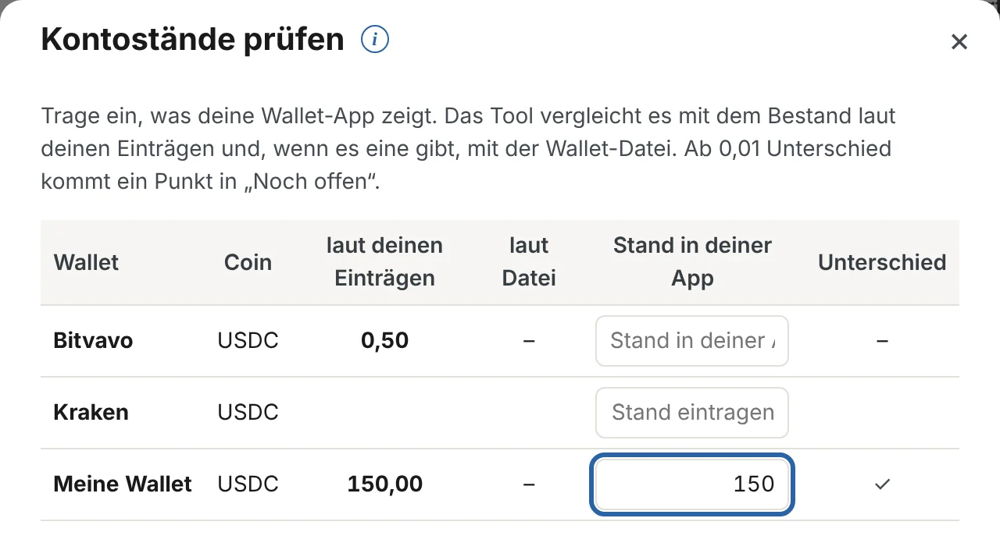
Danach steht bei „Noch offen“ keine Zahl mehr, und „Bestand jetzt“ zeigt, was in jeder Wallet liegt und was es gekostet hat.

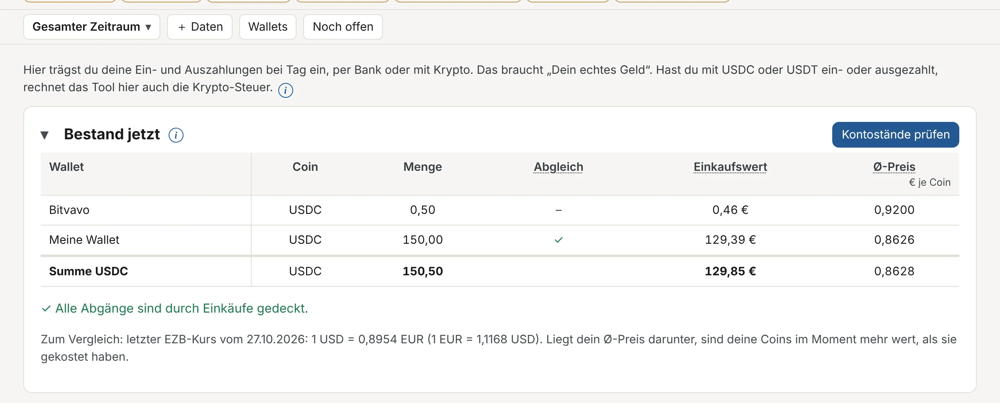
12. Wie es weitergeht
Danach findest du deine Zahlen in den Reitern „Auswertung“ und „Steuer“. Die Krypto-Werte im Reiter „Steuer“ sind vollständig, wenn „Noch offen“ keine roten Punkte und keine offenen Vorschläge mehr zeigt.
Jeden Monat (empfohlen)
- Speichere in MetaTrader 5 für jedes Konto den Report neu.
- Ziehe alle Reports in den Reiter „Reports“. Was schon da ist, erkennt das Tool.
- Füge die neuen Tag-Daten ein und sieh in „Noch offen“ nach.
- Speichere eine Sicherung.
Später kommen in diese Anleitung: Wallet-Dateien, Steuer und Sicherung.